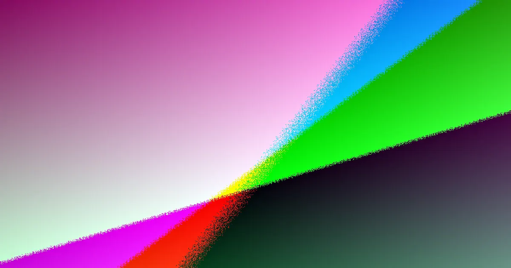

A Perth retaining wall quote should be read against the published guide figure of roughly $250 to $600 per square metre of wall face, which excludes GST, excavation, drainage and difficult access. In Western Australia, permit checks commonly begin once a wall retains more than 0.5 metres, and engineered walls involve AS 4678 and the Certificate of Design Compliance, BA3, process. The real price difference usually sits in support tasks, not the visible wall.
For local buyers, retaining walls perth quotes explained with the exclusions listed plainly before anyone signs.
Retaining Walls Perth Quotes Explained Explained
The broad installed indication of roughly $250 to $600 per square metre of wall face is a starting range, not a finished price. The parent guide is explicit that the figure excludes GST, excavation, drainage and difficult access, which means two quotes using the same headline rate can land on very different final numbers. For readers working through retaining walls perth quotes for the first time, the habit to build is simple: separate the visible wall from the work that lets the wall stand.
A useful quote names the wall system, the approximate wall face area, the retained height, the access assumptions and who carries responsibility for approvals. If a quote only lists a material and a rate, it is an estimate with a friendly layout, not yet a comparable price.
this overview of common misconceptions about wall materials, permits and pricing is worth reading before comparing figures, because several of the cost surprises trace back to myths rather than to the site itself.
Inclusions that move the final price
The parent guide groups the support tasks that sit behind the visible face. Each one can change the number on the invoice, so each deserves its own line or a clear statement that it is excluded.
- Excavation and spoil removal: sandy coastal plain blocks and foothill sites with shallow soil over rock demand different digging effort, and spoil has to go somewhere.
- Drainage: the guide frames drainage as a design question, asking how subsoil water will be collected and discharged. Wet winter drainage on a sloping block is not a minor add-on.
- Engineering and documentation: engineered walls bring AS 4678 and the Certificate of Design Compliance, BA3, process into scope, and someone has to pay for drawings and certification.
- Permits and inspections: once retained height passes 0.5 metres, or where a wall ties into other building work, affects adjoining land or sits on a boundary, approval work may apply at any height.
- Reinstatement: fences, paving, garden edges and access paths disturbed during construction rarely restore themselves.
When one contractor folds drainage into the rate and another leaves it provisional, the cheaper quote is an illusion. Compare scope, then price.
Provisional sums, prime cost items and variations
Quotes for retaining wall work often carry figures that look firm but are not. A provisional sum is an allowance for work whose extent is unknown at signing, commonly excavation in ground that has not been fully tested. A prime cost item is an allowance for a supply item, such as a specific block or panel system, yet to be selected. Both can legitimately rise once the real quantities are known.
Variations are the third moving part. The parent guide advises asking what happens if council requests design changes, and the same question applies to what happens when rock appears where soil was expected. A written record of the agreed scope and exclusions, which the guide recommends keeping, is the reference point that decides whether a variation is fair.
The practical test: if a figure in the quote depends on something unknown, ask the contractor to name the assumption. An estimate becomes a fixed price written quote when the unknowns are either measured, allowed for generously, or excluded in writing.
Comparing quotes like for like
The guide's comparison advice reduces to five fields. If every quote answers all five, the cheapest number is meaningful; if not, it is decoration.
- Wall type and face area: limestone, post-and-panel, timber sleeper, besser block and rock walls price differently, and area drives material volume.
- Retained height, not visible face: the figure that triggers WA permit checks and engineering thought is the height of ground being held back.
- Access assumptions: narrow entries, steps, fences and excavation limits all cost labour time.
- Drainage allowance: stated inclusions, a named allowance, or silence, which should be treated as a question, not a saving.
- Approval responsibilities: who lodges permits, who pays for documentation and who manages council questions.
Ask what information would turn the estimate into a fixed price. Usually the answer is measurements, photos, a soil or access note and confirmation of the approval pathway, which is exactly the brief described in the parent guide.
Questions that turn an estimate into a fixed price
Bring the questions to the first site inspection rather than the negotiation stage.
- Does the rate include GST, and what is the exclusion list in writing?
- Is drainage a fixed inclusion, a provisional sum or excluded?
- Who is responsible for engineering input, the BA3 certificate, permit lodging and inspections?
- What happens to the price if the council requests design changes or retained height is revised?
- Does the wall affect a neighbour's land, fence line or planned building work, and is that reflected in the scope?
A contractor who answers these plainly is giving a quote that can survive contact with the site. One who cannot is pricing the visible wall and leaving the rest for later.
- Measure and record. Record the retained height the wall will hold back, not only the visible face, and note the length and location.
- Photograph the site. Capture access points, steps, fences, existing drainage paths and any boundary or fence issues described in the guide.
- Confirm the approval pathway. Check with the local government before works start, since WA permit checks commonly begin above 0.5 metres and can apply to lower walls tied to other work or boundaries.
- Build a written brief. Combine measurements, photos, access notes and nearby planned works so contractors price the same scope.
- Compare in writing. Match wall type, face area, drainage and approval responsibilities across quotes, then ask what is needed to fix the price.
| Quote element | What it should state | What to ask |
|---|---|---|
| Wall system and face area | Material, approximate square metres of face, retained height | Is the area measured or estimated? |
| Rate per square metre | Whether GST, excavation and drainage are in or out | What is the exclusion list in writing? |
| Drainage | Collection and discharge method, fixed or provisional | What allowance applies if groundwater is found? |
| Approvals | Responsibility for permits, AS 4678 design input, BA3 certificate | Does the quote include documentation or construction only? |
| Variations | How council design changes or rock discoveries are priced | What records decide a fair variation? |
Common questions
Why can two quotes using the same per square metre rate end up far apart? Because the broad $250 to $600 per square metre indication excludes GST, excavation, drainage and difficult access. One contractor may include those tasks while another lists them as provisional or excluded, so the final project cost diverges even when the headline rates match.
Is the cheapest retaining wall quote the one to accept? Not automatically. The parent guide advises comparing like with like: wall type, approximate face area, access assumptions, drainage allowance and approval responsibilities. A low rate with drainage and permit documentation excluded can cost more once those tasks are priced in.
When does approval work start affecting the quote? In Western Australia, permit checks commonly begin once a wall retains more than 0.5 metres, and a wall of any height can need approval if it connects with other building work, affects adjoining land or sits on a boundary. Engineered walls add AS 4678 design requirements and the BA3 certificate process, all of which belong in the quoted scope.
An independent guide to reading retaining wall quotes in Perth, grounded in the published parent guide and general building authority resources, not a price guarantee or a substitute for site-specific advice.